nion
nionCombined Factors - Theory mixed with a little bit of reality
Combined Factors - In theory 2
Contents
Preparation
Let's load the data from ..
load('../data_equity_list_us.mat'); load('../data_field_list.mat'); load('../data_historical_data_us.mat');
take data sample, load data & the list
index = datasample(1:1300,1000,'Replace',false);
px = fun_load_price(history_us, equity_list_us, index);
px = fun_clean_data(px);
list = equity_list_us(index,:);
load observations
mom_ts = fun_calculate_mom(px); pb_ts = fun_load_observations(history_us, equity_list_us, index,'pb'); cap_ts = fun_load_observations(history_us, equity_list_us, index,'cap'); beta_ts = fun_load_observations(history_us, equity_list_us, index,'beta'); grossmargin_ts = fun_load_observations(history_us, equity_list_us, index,'gm'); turnover_ts = fun_load_observations(history_us, equity_list_us, index,'turnover'); roa_ts = fun_load_observations(history_us, equity_list_us, index,'roa'); leverage_ts = fun_load_observations(history_us, equity_list_us, index,'leverage');
calculate score
score_mom_ts = fun_calculate_score(mom_ts,list,'sectorsort',px); score_pb_ts = -fun_calculate_score(pb_ts,list,'sectorsort',px); score_cap_ts = -fun_calculate_score(cap_ts,list,'sectorsort',px); score_beta_ts = -fun_calculate_score(beta_ts,list,'sectorsort',px); score_leverage_ts = -fun_calculate_score(leverage_ts,list,'sectorsort',px); score_roa_ts = fun_calculate_score(roa_ts,list,'sectorsort',px); score_grossmargin_ts = fun_calculate_score(grossmargin_ts,list,'sectorsort',px); score_turnover_ts = fun_calculate_score(turnover_ts,list,'sectorsort',px); score_quality_ts = score_leverage_ts+score_roa_ts+score_grossmargin_ts+score_turnover_ts; score_quality_ts = fun_combine_score(score_quality_ts);
Trim
score_mom_ts = score_mom_ts(75:end);
score_pb_ts = score_pb_ts(75:end);
score_cap_ts = score_cap_ts(75:end);
score_beta_ts = score_beta_ts(75:end);
score_quality_ts = score_quality_ts(75:end);
score_ts = {score_mom_ts; score_pb_ts; score_cap_ts; score_beta_ts; score_quality_ts};
px = px(75:end);
Generate factor portfolio
Market neutral factor portfolios
hedge_ratio = [0.82 1.25 1.25 0.73 0.88]; i = 1; while i<=5 % load benchmark portfolio_weight_eq_weight_ts = fun_portfolio_weight_sector_neutral(score_ts{i},'equalweight'); portfolio_rt_ts = fun_portfolio_return(px, portfolio_weight_eq_weight_ts); benchmark = [100; 100*exp(fts2mat(cumsum(portfolio_rt_ts)))]; benchmark_ts{i} = fints(px.dates, benchmark,'EqualWeightIndex'); % calculate factor portfolio portfolio_weight_ts = fun_portfolio_weight_sector_neutral(score_ts{i},'longonly'); portfolio_cap_ts{i} = fun_sequential_backtest_partial(100, px, benchmark_ts{i}, hedge_ratio(i), portfolio_weight_ts,false); correlation_matrix = corrcoef(fts2mat(tick2ret(portfolio_cap_ts{i})), fts2mat(tick2ret(benchmark_ts{i}))); correlation(i) = correlation_matrix(1,2); sharpe_ratio(i) = sqrt(12)*sharpe(fts2mat(tick2ret(portfolio_cap_ts{i})),0); vol(i) = sqrt(12)*std(fts2mat(tick2ret(portfolio_cap_ts{i}))); i = i+1; end 12*mean([fts2mat(tick2ret(portfolio_cap_ts{1})) fts2mat(tick2ret(portfolio_cap_ts{2})) fts2mat(tick2ret(portfolio_cap_ts{3})) fts2mat(tick2ret(portfolio_cap_ts{4})) fts2mat(tick2ret(portfolio_cap_ts{5}))]) corrcoef([fts2mat(tick2ret(portfolio_cap_ts{1})) fts2mat(tick2ret(portfolio_cap_ts{2})) fts2mat(tick2ret(portfolio_cap_ts{3})) fts2mat(tick2ret(portfolio_cap_ts{4})) fts2mat(tick2ret(portfolio_cap_ts{5}))]) 12*cov([fts2mat(tick2ret(portfolio_cap_ts{1})) fts2mat(tick2ret(portfolio_cap_ts{2})) fts2mat(tick2ret(portfolio_cap_ts{3})) fts2mat(tick2ret(portfolio_cap_ts{4})) fts2mat(tick2ret(portfolio_cap_ts{5}))]) plot(correlation); snapnow; plot(sharpe_ratio); snapnow; plot(vol); snapnow;
ans =
0.0458 -0.0040 0.0352 0.0121 0.0293
ans =
1.0000 -0.6788 -0.3751 0.2643 0.3778
-0.6788 1.0000 0.6057 -0.3530 -0.5478
-0.3751 0.6057 1.0000 -0.3196 -0.2935
0.2643 -0.3530 -0.3196 1.0000 0.1224
0.3778 -0.5478 -0.2935 0.1224 1.0000
ans =
0.0039 -0.0022 -0.0011 0.0006 0.0008
-0.0022 0.0028 0.0016 -0.0006 -0.0010
-0.0011 0.0016 0.0024 -0.0005 -0.0005
0.0006 -0.0006 -0.0005 0.0011 0.0001
0.0008 -0.0010 -0.0005 0.0001 0.0012
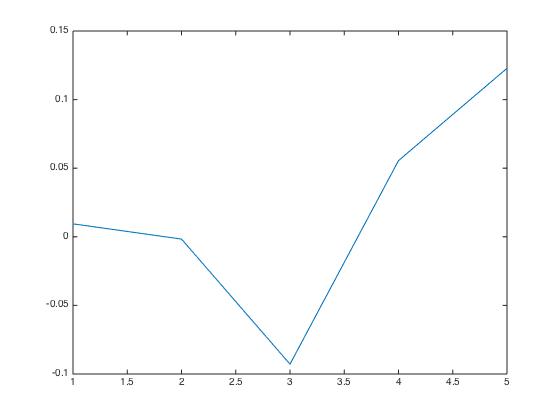 

Combined Factor portfolios
put factor portfolio in order.
FactorList = {'MOM', 'HML', 'SML', 'BAB','QUAL'};
d = portfolio_cap_ts{1}.dates;
Xfts = fints(d, zeros(numel(d),5), FactorList);
Xfts.MOM = fts2mat(portfolio_cap_ts{1});
Xfts.HML = fts2mat(portfolio_cap_ts{2});
Xfts.SML = fts2mat(portfolio_cap_ts{3});
Xfts.BAB = fts2mat(portfolio_cap_ts{4});
Xfts.QUAL = fts2mat(portfolio_cap_ts{5});
plot(log(Xfts));
legend('location','northwest');
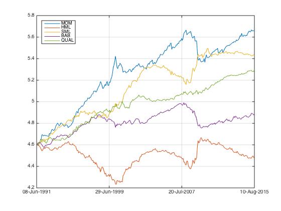 cash and market
market_return = mean(fts2mat(tick2ret(benchmark_ts{1})));
market_vol = std(fts2mat(tick2ret(benchmark_ts{1})));
cash_return = 0.0008;
cash_vol = 0.0016;
estimate asset mean and covariance
p = Portfolio('AssetList', FactorList, 'RiskFreeRate', cash_return); p = estimateAssetMoments(p, Xfts, 'dataformat', 'prices'); p = setInitPort(p, 1/p.NumAssets); [equal_weight_vol, equal_weight_return] = estimatePortMoments(p, p.InitPort);
plot
figure; clf; portfolioexamples_plot('Asset Risks and Returns', ... {'scatter', market_vol, market_return, {'Market'}}, ... {'scatter', cash_vol, cash_return, {'Cash'}}, ... {'scatter', equal_weight_vol, equal_weight_return, {'Equal'}}, ... {'scatter', sqrt(diag(p.AssetCovar)), p.AssetMean, p.AssetList, '.r'});

optimze the portfolio
p = setDefaultConstraints(p); pwgt = estimateFrontier(p, 40); [prsk, pret] = estimatePortMoments(p, pwgt); clf; portfolioexamples_plot('Efficient Frontier', ... {'line', prsk, pret}, ... {'scatter', [market_vol, cash_vol, equal_weight_vol], [market_return, cash_return, equal_weight_return], {'Market', 'Cash', 'Equal'}}, ... {'scatter', sqrt(diag(p.AssetCovar)), p.AssetMean, p.AssetList, '.r'});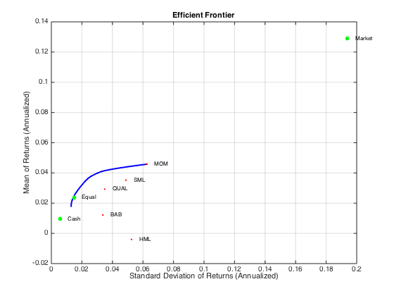
maximize sharpe ratio
q = setBudget(p, 0, 1); qwgt = estimateFrontier(q, 20); [qrsk, qret] = estimatePortMoments(q, qwgt); % Plot efficient frontier with tangent line (0 to 1 cash) clf; portfolioexamples_plot('Efficient Frontier with Tangent Line', ... {'line', prsk, pret}, ... {'line', qrsk, qret, [], [], 1}, ... {'scatter', [market_vol, cash_vol, equal_weight_vol], [market_return, cash_return, equal_weight_return], {'Market', 'Cash', 'Equal'}}, ... {'scatter', sqrt(diag(p.AssetCovar)), p.AssetMean, p.AssetList, '.r'}); p = setInitPort(p, 0); swgt = estimateMaxSharpeRatio(p); [srsk, sret] = estimatePortMoments(p, swgt); disp(swgt); disp(sqrt(12)*sret/srsk);
0.2143
0
0.3922
0.0784
0.3151
1.5717
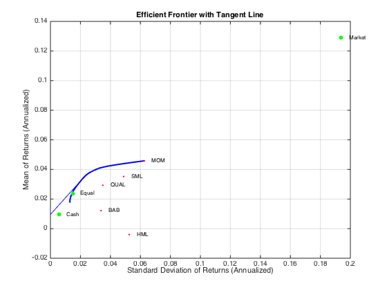 plot result.
portfolio_weight_ts = fints(Xfts.dates,bsxfun(@times, ones(length(Xfts),length(swgt)),swgt')); portfolio_rt_ts = fun_portfolio_return(Xfts, portfolio_weight_ts); plot(cumsum(portfolio_rt_ts)); legend('off'); hold on; plot(log(Xfts)-log(100)); legend('off'); hold off;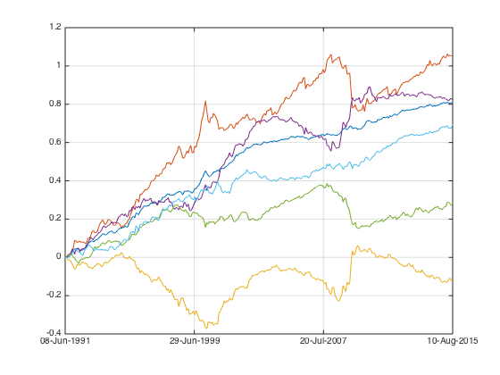
factor portfolios all has very low volatility. I need a lot of leverage to amplify its risk to target level. since all factor portfolio are close to capital neutral, the capital requirement is merely for margins. can we learned anything here?
Combined factor portfolio with Market
put factor portfolio in order.
FactorList = {'MOM', 'HML', 'SML', 'BAB','QUAL','MKT'};
d = portfolio_cap_ts{1}.dates;
Xfts = fints(d, zeros(numel(d),6), FactorList);
Xfts.MOM = fts2mat(portfolio_cap_ts{1});
Xfts.HML = fts2mat(portfolio_cap_ts{2});
Xfts.SML = fts2mat(portfolio_cap_ts{3});
Xfts.BAB = fts2mat(portfolio_cap_ts{4});
Xfts.QUAL = fts2mat(portfolio_cap_ts{5});
Xfts.MKT = fts2mat(benchmark_ts{1});
plot(log(Xfts));
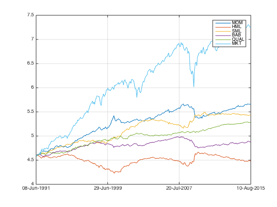 cash and market
market_return = mean(fts2mat(tick2ret(benchmark_ts{1})));
market_vol = std(fts2mat(tick2ret(benchmark_ts{1})));
cash_return = 0.0008;
cash_vol = 0.0016;
estimate asset mean and covariance
p = Portfolio('AssetList', FactorList, 'RiskFreeRate', cash_return); p = estimateAssetMoments(p, Xfts, 'dataformat', 'prices'); p = setInitPort(p, 1/p.NumAssets); [equal_weight_vol, equal_weight_return] = estimatePortMoments(p, p.InitPort);
plot
figure; clf; portfolioexamples_plot('Asset Risks and Returns', ... {'scatter', market_vol, market_return, {'Market'}}, ... {'scatter', cash_vol, cash_return, {'Cash'}}, ... {'scatter', equal_weight_vol, equal_weight_return, {'Equal'}}, ... {'scatter', sqrt(diag(p.AssetCovar)), p.AssetMean, p.AssetList, '.r'});

optimze the portfolio
p = setDefaultConstraints(p); pwgt = estimateFrontier(p, 40); [prsk, pret] = estimatePortMoments(p, pwgt); clf; portfolioexamples_plot('Efficient Frontier', ... {'line', prsk, pret}, ... {'scatter', [market_vol, cash_vol, equal_weight_vol], [market_return, cash_return, equal_weight_return], {'Market', 'Cash', 'Equal'}}, ... {'scatter', sqrt(diag(p.AssetCovar)), p.AssetMean, p.AssetList, '.r'});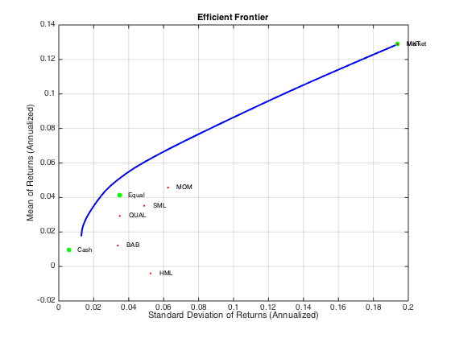
maximize sharpe ratio
q = setBudget(p, 0, 1); qwgt = estimateFrontier(q, 20); [qrsk, qret] = estimatePortMoments(q, qwgt); % Plot efficient frontier with tangent line (0 to 1 cash) clf; portfolioexamples_plot('Efficient Frontier with Tangent Line', ... {'line', prsk, pret}, ... {'line', qrsk, qret, [], [], 1}, ... {'scatter', [market_vol, cash_vol, equal_weight_vol], [market_return, cash_return, equal_weight_return], {'Market', 'Cash', 'Equal'}}, ... {'scatter', sqrt(diag(p.AssetCovar)), p.AssetMean, p.AssetList, '.r'}); p = setInitPort(p, 0); swgt = estimateMaxSharpeRatio(p); [srsk, sret] = estimatePortMoments(p, swgt); disp(swgt); disp(sqrt(12)*sret/srsk);
0.2166
0
0.3919
0.0620
0.2688
0.0606
1.7005
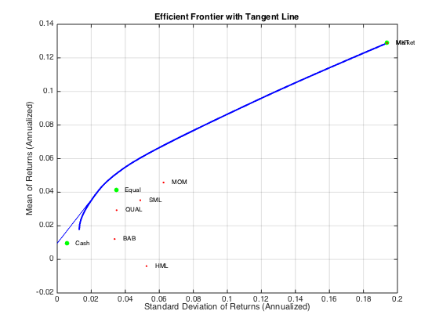 plot result.
portfolio_weight_ts = fints(Xfts.dates,bsxfun(@times, ones(length(Xfts),length(swgt)),swgt')); portfolio_rt_ts = fun_portfolio_return(Xfts, portfolio_weight_ts); plot(cumsum(portfolio_rt_ts)); legend('off'); hold on; plot(log(Xfts)-log(100)); legend('off'); hold off;

Topm combined factor portfolio
I know that topm factor portfolio has stronger signal and high vol, let's check those out.
Market neutral factor portfolios
hedge_ratio = [0.82 1.47 1.57 0.70 0.88]; i = 1; while i<=5 % load benchmark portfolio_weight_eq_weight_ts = fun_portfolio_weight_sector_neutral(score_ts{i},'equalweight'); portfolio_rt_ts = fun_portfolio_return(px, portfolio_weight_eq_weight_ts); benchmark = [100; 100*exp(fts2mat(cumsum(portfolio_rt_ts)))]; benchmark_ts{i} = fints(px.dates, benchmark,'EqualWeightIndex'); % calculate factor portfolio portfolio_weight_ts = fun_portfolio_weight_sector_neutral(score_ts{i},'topmlongonly',0.2); portfolio_cap_ts{i} = fun_sequential_backtest_partial(100, px, benchmark_ts{i}, hedge_ratio(i), portfolio_weight_ts,false); correlation_matrix = corrcoef(fts2mat(tick2ret(portfolio_cap_ts{i})), fts2mat(tick2ret(benchmark_ts{i}))); correlation(i) = correlation_matrix(1,2); sharpe_ratio(i) = sqrt(12)*sharpe(fts2mat(tick2ret(portfolio_cap_ts{i})),0); vol(i) = sqrt(12)*std(fts2mat(tick2ret(portfolio_cap_ts{i}))); i = i+1; end 12*mean([fts2mat(tick2ret(portfolio_cap_ts{1})) fts2mat(tick2ret(portfolio_cap_ts{2})) fts2mat(tick2ret(portfolio_cap_ts{3})) fts2mat(tick2ret(portfolio_cap_ts{4})) fts2mat(tick2ret(portfolio_cap_ts{5}))]) corrcoef([fts2mat(tick2ret(portfolio_cap_ts{1})) fts2mat(tick2ret(portfolio_cap_ts{2})) fts2mat(tick2ret(portfolio_cap_ts{3})) fts2mat(tick2ret(portfolio_cap_ts{4})) fts2mat(tick2ret(portfolio_cap_ts{5}))]) 12*cov([fts2mat(tick2ret(portfolio_cap_ts{1})) fts2mat(tick2ret(portfolio_cap_ts{2})) fts2mat(tick2ret(portfolio_cap_ts{3})) fts2mat(tick2ret(portfolio_cap_ts{4})) fts2mat(tick2ret(portfolio_cap_ts{5}))]) plot(correlation); snapnow; plot(sharpe_ratio); snapnow; plot(vol); snapnow;
ans =
0.0706 -0.0026 0.0360 0.0115 0.0632
ans =
1.0000 -0.5488 -0.2467 0.2442 0.0874
-0.5488 1.0000 0.5780 -0.3087 -0.0838
-0.2467 0.5780 1.0000 -0.1546 -0.0678
0.2442 -0.3087 -0.1546 1.0000 -0.0366
0.0874 -0.0838 -0.0678 -0.0366 1.0000
ans =
0.0106 -0.0063 -0.0025 0.0014 0.0012
-0.0063 0.0124 0.0064 -0.0019 -0.0013
-0.0025 0.0064 0.0099 -0.0009 -0.0009
0.0014 -0.0019 -0.0009 0.0031 -0.0003
0.0012 -0.0013 -0.0009 -0.0003 0.0192
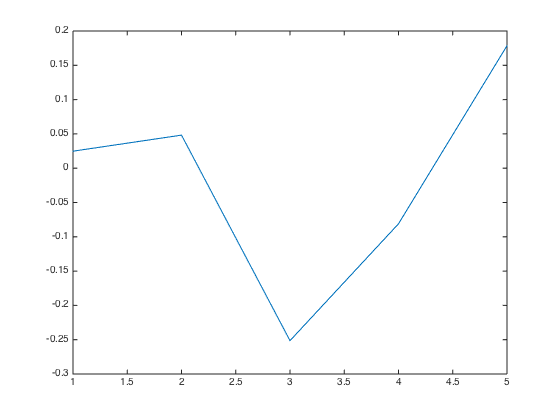  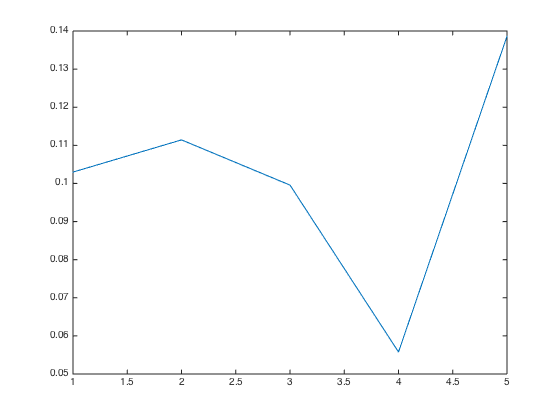
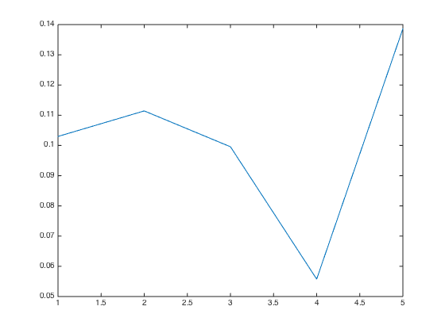 put factor portfolio in order.
FactorList = {'MOM', 'HML', 'SML', 'BAB','QUAL'};
d = portfolio_cap_ts{1}.dates;
Xfts = fints(d, zeros(numel(d),5), FactorList);
Xfts.MOM = fts2mat(portfolio_cap_ts{1});
Xfts.HML = fts2mat(portfolio_cap_ts{2});
Xfts.SML = fts2mat(portfolio_cap_ts{3});
Xfts.BAB = fts2mat(portfolio_cap_ts{4});
Xfts.QUAL = fts2mat(portfolio_cap_ts{5});
plot(log(Xfts));
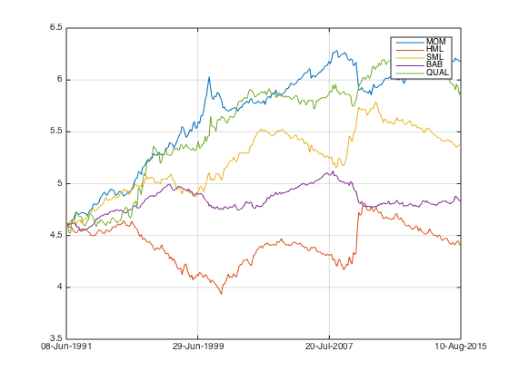 cash and market
market_return = mean(fts2mat(tick2ret(benchmark_ts{1})));
market_vol = std(fts2mat(tick2ret(benchmark_ts{1})));
cash_return = 0.0008;
cash_vol = 0.0016;
estimate asset mean and covariance
p = Portfolio('AssetList', FactorList, 'RiskFreeRate', cash_return); p = estimateAssetMoments(p, Xfts, 'dataformat', 'prices'); p = setInitPort(p, 1/p.NumAssets); [equal_weight_vol, equal_weight_return] = estimatePortMoments(p, p.InitPort);
plot
figure; clf; portfolioexamples_plot('Asset Risks and Returns', ... {'scatter', market_vol, market_return, {'Market'}}, ... {'scatter', cash_vol, cash_return, {'Cash'}}, ... {'scatter', equal_weight_vol, equal_weight_return, {'Equal'}}, ... {'scatter', sqrt(diag(p.AssetCovar)), p.AssetMean, p.AssetList, '.r'});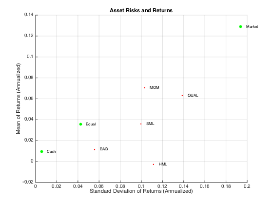
optimze the portfolio
p = setDefaultConstraints(p); pwgt = estimateFrontier(p, 40); [prsk, pret] = estimatePortMoments(p, pwgt); clf; portfolioexamples_plot('Efficient Frontier', ... {'line', prsk, pret}, ... {'scatter', [market_vol, cash_vol, equal_weight_vol], [market_return, cash_return, equal_weight_return], {'Market', 'Cash', 'Equal'}}, ... {'scatter', sqrt(diag(p.AssetCovar)), p.AssetMean, p.AssetList, '.r'});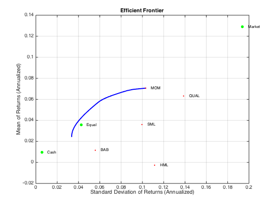
maximize sharpe ratio
q = setBudget(p, 0, 1); qwgt = estimateFrontier(q, 20); [qrsk, qret] = estimatePortMoments(q, qwgt); % Plot efficient frontier with tangent line (0 to 1 cash) clf; portfolioexamples_plot('Efficient Frontier with Tangent Line', ... {'line', prsk, pret}, ... {'line', qrsk, qret, [], [], 1}, ... {'scatter', [market_vol, cash_vol, equal_weight_vol], [market_return, cash_return, equal_weight_return], {'Market', 'Cash', 'Equal'}}, ... {'scatter', sqrt(diag(p.AssetCovar)), p.AssetMean, p.AssetList, '.r'}); p = setInitPort(p, 0); swgt = estimateMaxSharpeRatio(p); [srsk, sret] = estimatePortMoments(p, swgt); disp(swgt); disp(sqrt(12)*sret/srsk);
0.4777
0.0343
0.3050
0
0.1829
0.9799
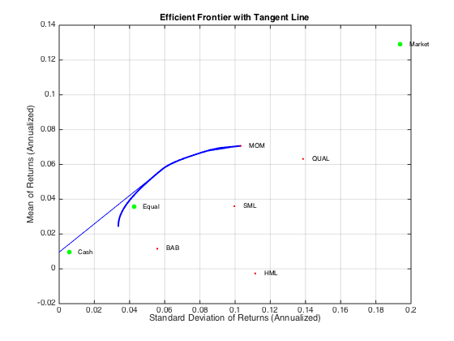 plot result.
portfolio_weight_ts = fints(Xfts.dates,bsxfun(@times, ones(length(Xfts),length(swgt)),swgt')); portfolio_rt_ts = fun_portfolio_return(Xfts, portfolio_weight_ts); plot(cumsum(portfolio_rt_ts)); legend('off'); hold on; plot(log(Xfts)-log(100)); legend('off'); hold off;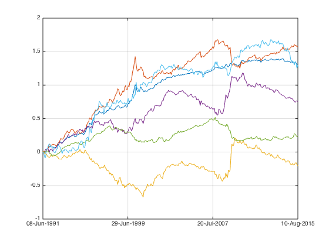
Sharpe 1~1.5 can be expected.